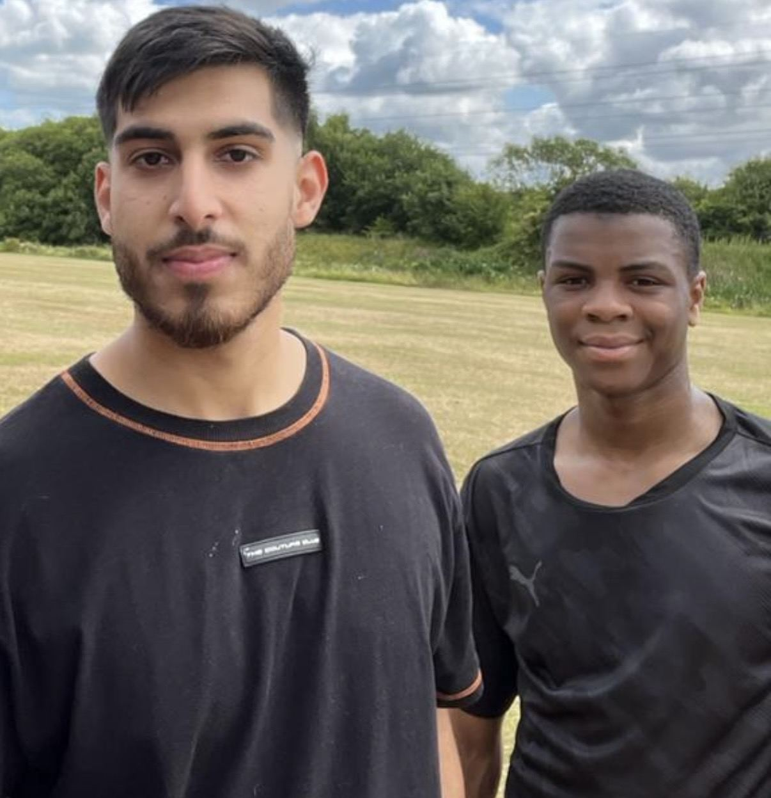
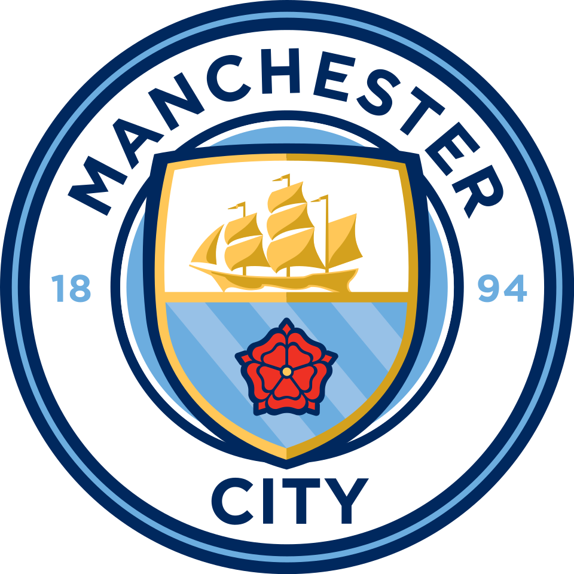
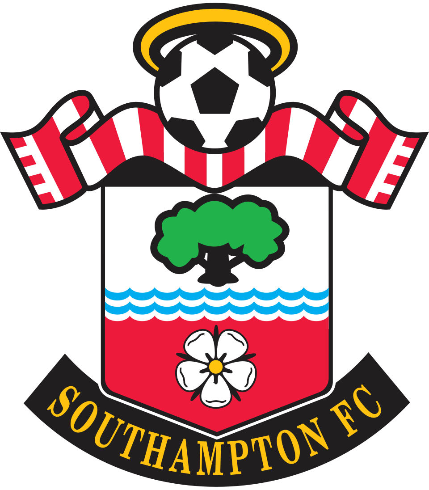
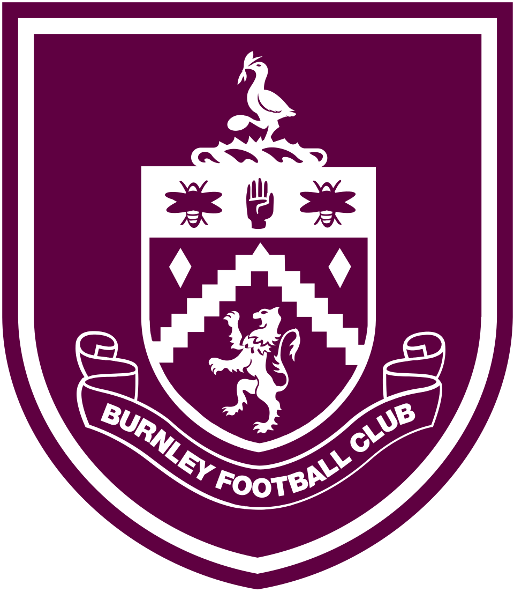
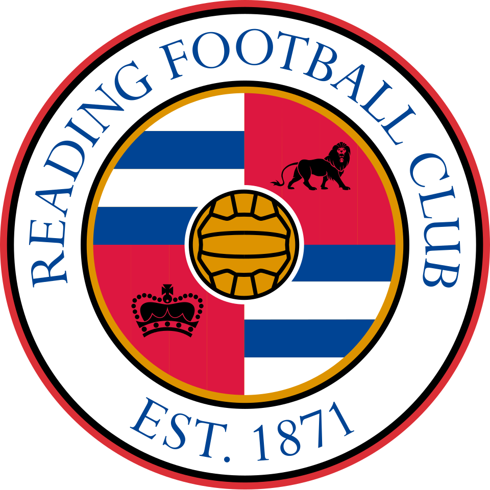
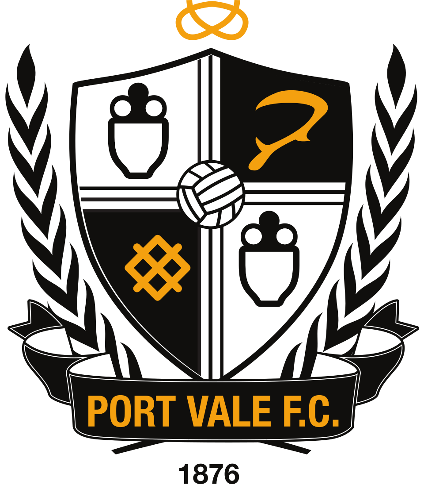

Sports Rehabilitation in Stoke-on-Trent & Newcastle-under-Lyme
Helping athletes return from injury, rebuild confidence and perform at their highest level.
Trusted by footballers, runners, gym athletes and active individuals.
Book AssessmentHelping athletes return from injury, rebuild confidence and perform at their highest level.
Trusted by footballers, runners, gym athletes and active individuals.
Book Assessment
Rehabilitation doesn’t stop in the clinic. We progress your recovery onto the pitch, gym or sport-specific environment to prepare you for real demands.
This includes graded return-to-running, change of direction, strength and sport-specific drills — helping you return to sport safely and confidently.
A structured approach combining treatment, rehabilitation and performance-based progression to get you back to sport safely.
Experience working within academy and professional football environments, supporting players progressing through elite pathways.






Logos shown for illustrative purposes of experience only. No official affiliation or endorsement implied.
Farid Alfa-Ruprecht
Manchester City & Bayer Leverkusen pathway
Baylee Dipepa
Southampton pathway
Tommy McDermott
Burnley pathway
John Clarke
Reading FC / Ireland U19
James Plant
Port Vale winger
Ben Lomax
Port Vale defender
Players listed represent individuals worked with in a professional or academy environment. No official endorsement implied.
Get expert rehab support tailored to your sport and goals.
Book Appointment